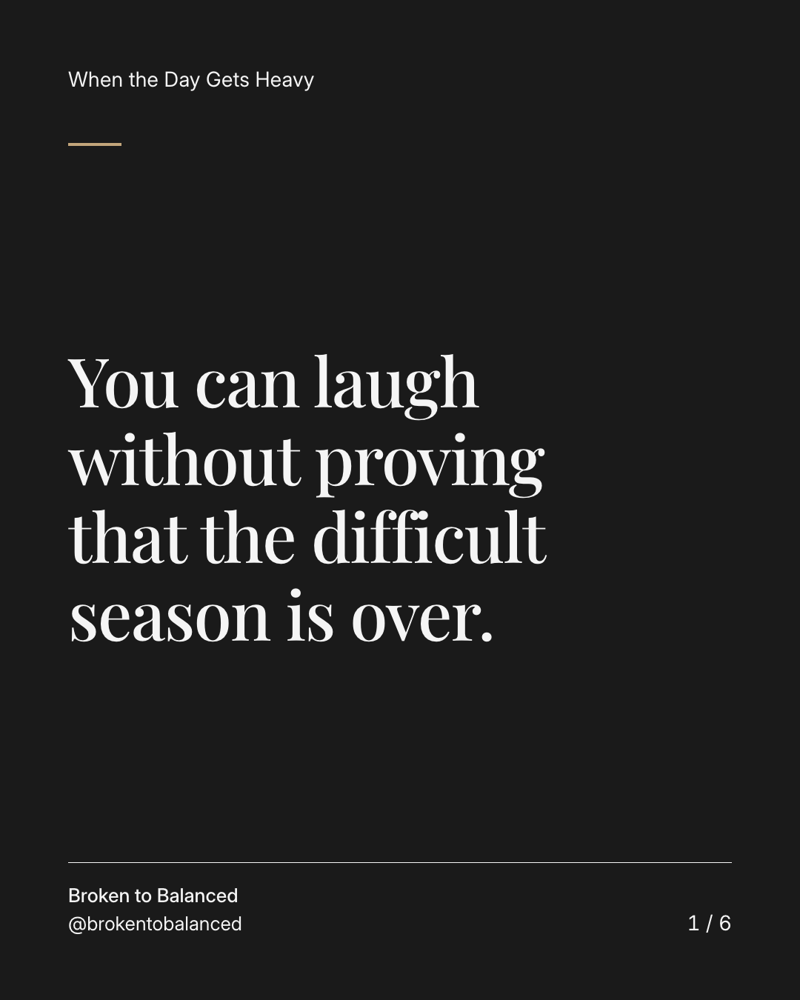
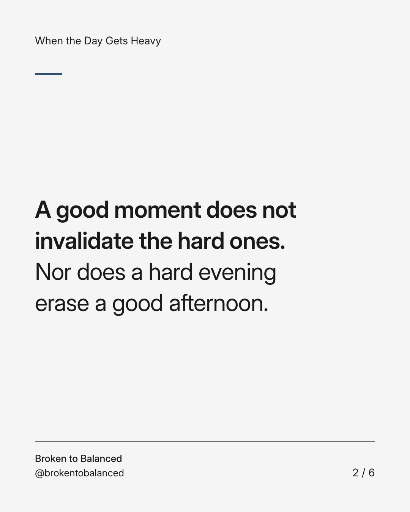
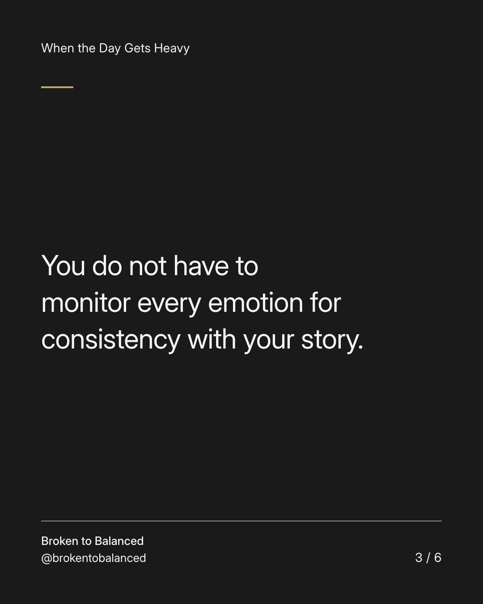
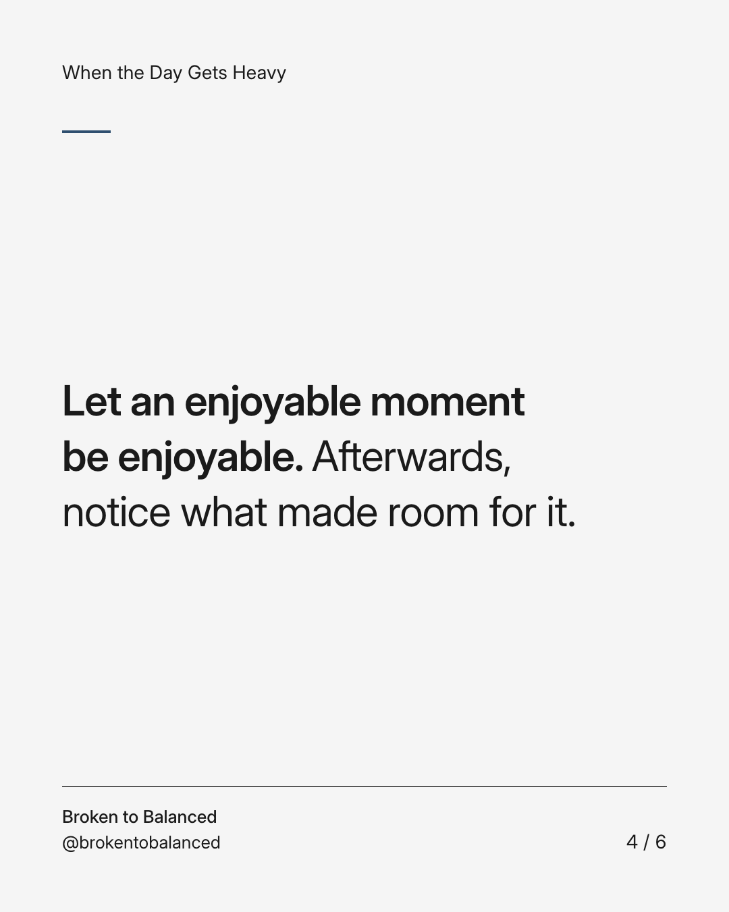
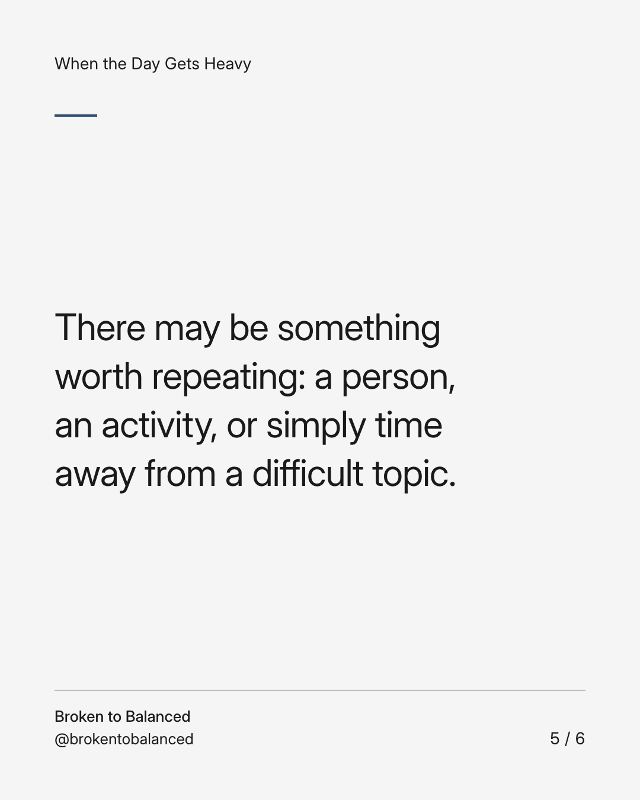
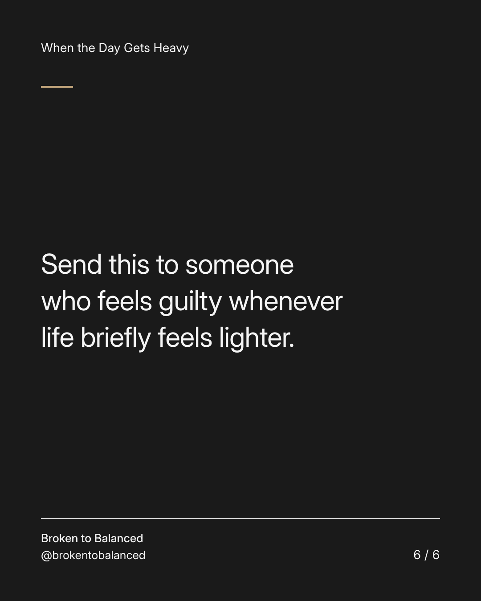

Exact text and accessibility text
You can laugh without proving that the difficult season is over.
Slide 1 of 6. You can laugh without proving that the difficult season is over.


Exact text and accessibility text
A good moment does not invalidate the hard ones. Nor does a hard evening erase a good afternoon.
Slide 2 of 6. A good moment does not invalidate the hard ones. Nor does a hard evening erase a good afternoon.


Exact text and accessibility text
You do not have to monitor every emotion for consistency with your story.
Slide 3 of 6. You do not have to monitor every emotion for consistency with your story.


Exact text and accessibility text
Let an enjoyable moment be enjoyable. Afterwards, notice what made room for it.
Slide 4 of 6. Let an enjoyable moment be enjoyable. Afterwards, notice what made room for it.


Exact text and accessibility text
There may be something worth repeating: a person, an activity, or simply time away from a difficult topic.
Slide 5 of 6. There may be something worth repeating: a person, an activity, or simply time away from a difficult topic.


Exact text and accessibility text
Send this to someone who feels guilty whenever life briefly feels lighter.
Slide 6 of 6. Send this to someone who feels guilty whenever life briefly feels lighter.
Exact caption
Plain-text fallback: select and copy the caption.